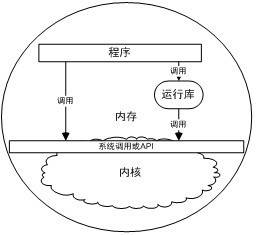

在这一部分里，我们将详细剖析在程序运行时，隐藏于背后的各种秘密：为什么程序能够执行，它是如何执行的，这些问题将在本部分一一得到解答。首先让我们对程序的运行环境有一个总览，下图描述了一个典型的程序环境。

程序环境
由此可以看到，程序的环境由以下三个部分组成：
此外，内核也可算作运行环境的一部分，但实际上系统调用部分充当了程序与内核交互的中介，因此在这里不把内核算作运行环境。在接下来的几章里，我们会对这几部分一一进行介绍。
10.1 程序的内存布局
10.2 栈与调用惯例
10.3 堆与内存管理
10.4 本章小结
要研究程序的运行环境，首先要弄明白程序与内存的关系。程序与内存的关系，好比鱼和水一般密不可分。内存是承载程序运行的介质，也是程序进行各种运算和表达的场所。了解程序如何使用内存，对程序本身的理解，以及后续章节的探讨非常有利。